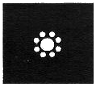
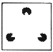
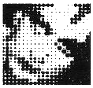
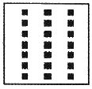
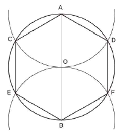
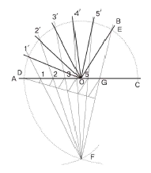
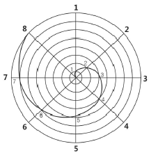
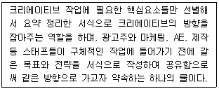
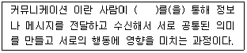

시각디자인기사 (2016-05-08 기출문제)
1과목: 시각디자인론
1. 브레인스토밍(brain storming)의 기본 규칙에 해당되지 않는 것은?
- 어떤 아이디어도 비판하지 않는다.
- 자유분방하게 많은 아이디어를 도출한다.
- 엉뚱하고 와일드한 아이디어도 좋다.
- 독창적인 아이디어 개발을 위한 고객의 제안을 통합하는 과정이다.
(정답률: 97%)

2. 인쇄매체광고의 내용적인 요소와 설명이 바르게 연결된 것은?
- 헤드라인(headline)－독자가 얻게 되는 구체적 정보의 도입부이며 광고의 아이디어와 직결되며 소구의 키포인트이다.
- 바디카피(body－copy)－사진 주위에 작은 활자로 된 짧은 글로 상황을 객관적으로 정확하게 묘사하는 특징을 갖고 있다.
- 슬로건(slogan)－독자에게 상품에 관한 구체적인 정보를 주어 구매행동으로 옮기게 하는 역할을 한다.
- 캡션(caption)－일반적으로 본문보다 큰 서체로 광고 전체의 내용을 함축적으로 전달하는 역할을 한다.
(정답률: 75%)
3. 유겐트스틸에 대한 설명으로 틀린 것은?
- 프랑스 파리에서 시작된 디자인 사조이다.
- 뮌헨에서 발행한 미술잡지 [유겐트]에서 시작하여 유행하였다.
- 청춘양식(young style)이라는 의미이다.
- 식물적 요소인 꽃과 잎 등의 곡선을 추상화, 양식화 하였다.
(정답률: 53%)
4. 판매, 광고전략을 설정할 때, 소비자의 구매능력을 측정하는 데 일반적으로 필요한 사항이 아닌 것은?
- 소비자 개인 소득
- 지역의 경제 상황
- 저축액과 용돈
- 여가시간
(정답률: 66%)
5. 컴퓨터 그래픽의 활용효과가 아닌 것은?
- 다양한 색채표현 및 이미지 교체가 용이하다.
- 이미지의 확대, 축소, 이동, 회전 등이 용이하다.
- 기계적 조작으로 환상적인 이미지의 표현이 어렵다.
- 이미지의 저장, 수정, 재구성이 용이하다.
(정답률: 97%)
6. 다음 중 주요 대중매체로서 인쇄매체에 해당하는 것은?
- 전단
- 포스터
- 신문
- 카탈로그
(정답률: 88%)
7. 저작권을 국제적으로 서로 보호할 것을 목적으로 체결된 조약은?
- 파리협약
- 베른협약
- 파리동맹
- 런던동맹
(정답률: 81%)
8. 소비자 행동에 영향을 미치는 요인이 아닌 것은?
- 문화적 요인
- 사회적 요인
- 개인적 요인
- 계절적 요인
(정답률: 75%)
9. 상표에 대한 설명 중 옳지 않는 것은?
- 상표는 문자만으로 표시되고 호칭되어야 한다.
- 상표는 자타상품 식별기능, 출처표시기능, 품질보증기능, 광고적 기능을 가진다.
- 상표권은 구성요소가 갖춘 상표가 상표법상 등록요건을 만족시킬 때 설정등록에 의해 발생한다.
- 상표는 독점배타성, 공익성, 탄력성이 있는 반영구적인 무체재산권이다.
(정답률: 82%)
10. 빛의 간섭효과가 만드는 간섭무늬를 이용하여 3차원의 실물체 영상을 기록·재상하는 기술로 복제방지용 신용카드, 소프트웨어 보호, 주류포장 등에 많이 사용되는 것은?
- 홀로그램(hologram)
- 슈퍼그래픽(super graphic)
- 컴퓨터그래픽(computer graphic)
- 일러스트레이션(illustration)
(정답률: 91%)
11. 미니멀리즘의 특징이 아닌 것은?
- 단순성
- 명료성
- 반복성
- 장식성
(정답률: 88%)
12. 아이디어의 발상방법 중 본래의 의도와 반대되는 표현에 의해 상대방의 자각을 유도해 내는 반어적 태도 또는 방식을 일컫는 용어는?
- 풍자(satire)
- 아이러니(irony)
- 아이리스 인(iris in)
- 아이디얼리즘(idealism)
(정답률: 87%)
13. 디자인보호법상의 디자인에 관한 설명으로 틀린 것은?
- 디자인보호법에서 디자인이라 함은 물품의 형상, 모양이나 색채 또는 이들을 결합한 것으로서 물품의 부분 및 글자는 포함되지 않는다.
- 디자인보호법이 정의하는 '디자인의 본질'은 물품성과 형태성이 무엇인가에 대한 이해로 접근해야 한다.
- 그래픽 이미지는 디자인의 성립요건을 만족하지 못하는 경우에 해당되어 디자인보호법상의 보호를 받을 수 없다.
- 사회 현실상 디자인이라 인정되는 것이라 할지라도 디자인 정의 규정에 부합되지 못한다면 독점 배타적인 권리인 디자인권을 확보할 수 없다.
(정답률: 46%)
14. 시각디자인을 기능별로 분류하였을 때 설명과 내용으로 알맞지 않은 것은?
- 지시적 기능：신호, 문자, 활자, 통계, 도표, 지도, 패키지 등 어떤 것을 가리키거나 문제 해결의 내용을 포함하고 있는 것
- 설득적 기능：포스터, 신문광고, 잡지광고, TV, CG와 같이 일정대상을 감화시켜 소기의 목적을 이루기 위한 것
- 상징적 기능：심벌마크, 패턴, 일러스트레이션등과 같이 시각적인 언어로 표현되는 것
- 기록적 또는 표현적 기능：사진, 영화, TV 등과 같은 것으로 오늘날 기술발달로 확대되고 있는 것
(정답률: 65%)
15. 다음 발상기법 중 가설을 발견해 내고자 할 때 사용하는 발상법은?
- 체크리스트법
- 입출력법
- KJ법
- 형태분석법
(정답률: 48%)
16. 소비자의 보편적인 심리변화와 반응의 단계를 나타내는 것으로 마케팅과 광고에는 AIDMA의 원리가 있다. 그 내용과 순서가 옳은 것은?
- 주목(Attention) → 흥미(Interest) → 욕구(Desire) → 시장(Market) → 행동(Action)
- 행동(Action) → 흥미(Interest) → 방어(Defense) → 기억(Memory) → 주목(Attention)
- 행동(Action) → 흥미(Interest) → 욕구(Desire) → 기억(Memory) → 주목(Attention)
- 주목(Attention) → 흥미(Interest) → 욕구(Desire) → 기억(Memory) → 행동(Action)
(정답률: 86%)
17. 상표권에 관한 내용 중 틀린 것은?
- 상표권의 존속기간은 상표권의 설정 등록이 있는 날부터 10년으로 한다.
- 상표사용자의 업무상의 신용유지를 도모하여, 산업발전에 이바지하고 수요자의 이익보호를 목적으로 한다.
- 상표권의 존속기간은 상표권의 등록일로부터 영구적이다.
- 상품의 품질을 오인하게 하거나 수요자를 기만할 염려가 있는 것은 상표등록을 받을 수 없다.
(정답률: 86%)
18. 다음 중 마케팅에 대한 설명으로 옳은 것은?
- 마케팅은 고객의 필요에 초점을 두어야 하며 그 필요, 충족을 통해 이익과 연결되지 않아도 좋다.
- 마케팅 시스템의 목표는 소비의 극소화, 소비자 만족의 극소화, 선택의 극소화, 생활의 질을 극소화하는 데 있다.
- 마케팅 믹스의 구성요소(J.E McCarthy 교수의 4P'S)는 Product, Price, Promotion, Planning 이다.
- 마케팅 관리의 과정은 마케팅 수립과정의 조직화 → 시장조사분석 → 표적사항의 선정→ 마케팅 믹스의 개발 → 마케팅 노력의 관리를 말한다.
(정답률: 80%)
19. 상표법상 등록이 안 되는 것은?
- 동양화로 직접 그린 '난'(蘭)도 컴퓨터그래픽으로 축소해서 상표 등록을 받고자 한다.
- 친구 친구라는 의미로 숫자 '7979'를 상표로 등록하고자 한다.
- 잠이 깨는 껌을 한글로 '앗'이라고 등록하고자 한다면 가능하다.
- 할머니의 사진을 컴퓨터그래픽을 활용해 받아서 상표로 등록하고자 한다.
(정답률: 59%)
20. 바우하우스(Bauhaus)를 가장 바르게 설명한 것은?
- 18세기 예술, 문화, 사회에 영향을 끼친 독창적인 예술운동이다.
- Bauhaus는 일반적으로 2기로 구분한다.
- 바이마르 미술공예학교와 바이마르 미술아카데미의 통합으로 시작되었다.
- 신기한 것을 창조하는 것을 목적으로 하였다.
(정답률: 65%)
2과목: 조형심리학
21. 다음 그림들 중 폐쇄성의 법칙을 설명하고 있는 것은?




(정답률: 67%)
22. 다음 중 선의 용도에 대한 명칭과 연결이 옳은 것은?(오류 신고가 접수된 문제입니다. 반드시 정답과 해설을 확인하시기 바랍니다.)
- 피치선－

- 중심선－

- 숨은선－

- 파단선－

(정답률: 34%)
23. 디자인의 원리 중 공간에 대한 설명으로 틀린 것은?
- 공간감이나 거리감을 나타내는 가장 쉬운 방법은 크기에 차이를 주는 것이다.
- 원근에 의한 공간표현방법으로 직선원근법, 대기원근법, 과장원근법, 다가원근법 등이 있다.
- 공간표현방법으로 크기, 원근, 중첩, 투명에 의한 표현방법이 있다.
- 두 도형 사이에 일어나는 전후의 깊이에 대한 착각은 강조에 의한 표현방법이다.
(정답률: 81%)
24. 원에 내접하는 정육각형 그리기에서 작도법이 잘못 설명된 것은?

- 직선 AOB(원의 중심선)를 그린다.
- A와 B를 중심으로 임의로 원호를 그린다.
- 원주와의 교점 C, D 및 E, F를 구한다.
- 원주와의 교점을 순차직선으로 연결하면 원에 내접하는 정육각형이 된다.
(정답률: 50%)
25. 다음 그림은 무엇을 하기 위한 작도인가?

- 원을 임의의 각으로 나눌 때
- 직선을 N등분 할 때
- 타원을 그릴 때
- 임의 각을 N등분 할 때
(정답률: 57%)
26. 기어(Gear)의 치형 곡선이나 원심펌프의 회전차곡선에 사용되는 것은?
- 인벌류트 곡선(Involute Curve)
- 사인 곡선(Sine Curve)
- 사이클로이드 곡선(Cycloid Curve)
- 트로코이드 곡선(Trochoid Curve)
(정답률: 17%)
27. 미학의 연구 대상에 대한 설명 중 틀린 것은?
- 인간이 느끼는 모든 부분과 정서를 탐구한다.
- 예술에서만 나타나는 미적인 것을 탐구한다.
- 이성보다는 감성이 지배적인 세계를 탐구한다.
- 모든 미적인 현상을 총체적으로 탐구한다.
(정답률: 80%)
28. 치수기입 시 지름을 나타내는 기호는?
- Ø
- R
- T
- C
(정답률: 94%)
29. “항상성”이 대상을 객관적으로 지각하려는 현상이라면, 이와 반대로 실제와 달리 지각하는 현상은?
- 색조
- 차폐
- 착시
- 시각
(정답률: 89%)
30. 작품 평가자 간의 오차를 유발시키는 선입견 중 후광효과(halo effect)에 대한 설명으로 옳은 것은?
- 평가자 자신의 특징과는 반대 방향으로 평가한다.
- 잘 알지 못하는 대상 등은 중성적 평가를 하려고 한다.
- 숙지하고 있는 혹은 자아관여가 강한 대상을 좋게 평가 한다.
- 우수한 사람이라는 인상을 받으면 그 사람이 어떤 행동을 하더라도 높이 평가하려고 한다.
(정답률: 88%)
31. 문화인류학자 Turnbull의 1961년 연구인 뇌의 망막에 맺히는 이미지의 크기에 근거해 물체와의 거리를 자동적으로 계산하지 못하는 착시는 무엇인가?
- 뮐러－라이어(Muller－Lyer) 착시
- 에빙하우스(Ebbinghaus) 착시
- 샌더스(Sanders)의 착시
- 에른스트 마하(Ernst Mach) 착시
(정답률: 76%)
32. 색(color)에 대한 설명 중 옳은 것은?
- 빛이 변하더라도 색채는 변하지 않는다.
- 색은 인접해 있는 색상에 따라 달라 보인다.
- 명도의 변화는 색상의 차이에 영향을 주지 않는다.
- 색으로 감정을 일으킬 수 없다.
(정답률: 66%)
33. 실제로 움직이지 않는 대상이 움직이는 것처럼 지각되는 현상을 가현운동(apparent movement)이라고 하는데 이와 관계가 없는 것은?
- 도지반전도형
- 영화
- 네온사인
- TV광고
(정답률: 83%)
34. 다음 그림에 해당하는 선의 종류는?

- 아르키메데스 소용돌이선
- 유크리드 소용돌이선
- 피타고라스 소용돌이선
- 가우디 소용돌이선
(정답률: 89%)
35. 입체의 각 방향의 면에 화면을 두어 투영된 면을 전개하는 투상도법은?
- 축측투상
- 투시투상
- 정투상
- 사투상
(정답률: 63%)
36. 다음 중 무아레(moire)효과가 가장 적게 일어나는 것은?
- 동심원들로 구성된 패턴
- 등간격의 직선들로 구성된 패턴
- 규칙적으로 구성된 점 패턴
- 각각의 자유 곡선들로 구성된 패턴
(정답률: 75%)
37. 나뭇잎, 뿌리, 줄기, 열매 등 부분으로 보지 않고 나무라는 전체로 보기를 주장하는 학파는?
- 행동주의 심리학
- 인지주의 심리학
- 형태주의 심리학
- 구성주의 심리학
(정답률: 54%)
38. 바우하우스의 교수로서 New Vision, Vision in Motion 등 특히 조형의 요소로써 빛에 대한 연구를 한 사람은?
- 모홀리 나기
- 파울 클레
- 바실리 칸딘스키
- 요한네스 이텐
(정답률: 65%)
39. 황금비례와 관련이 없는 것은?
- 앵무조개의 단면
- 스트라디바리우스 바이올린
- 파르테논 신전
- 어빙하우스
(정답률: 71%)
40. 다음 중 대칭에 대한 설명으로 틀린 것은?
- 균형의 가장 일반적인 모습으로 정적인 균형이 잡힌 상태이다.
- 정적으로 전통적인 효과를 얻는데 부적합하다.
- 방사대칭은 한 개의 점을 중심으로 일정한 각도로 회전하여 얻어진다.
- 보수성이 강하고 딱딱한 느낌을 주고 변화가 거의 없다.
(정답률: 77%)
3과목: 광고학
41. 마케팅 믹스 도구인 4P에 해당되는 것은?
- Promotion
- Process
- People
- Physical evidence
(정답률: 90%)
42. 마케팅 콘셉트의 의미로 적합한 것은?
- 생산자 지향주의로서 생산자가 필요한 것을 수용하여 생산한다.
- 생산자 지향주의로서 소비자가 필요한 것을 수용하여 생산한다.
- 소비자 지향주의로서 소비자가 필요로 하는 것을 수용하여 생산한다.
- 소비자 지향주의로서 판매자가 필요한 것을 수용하여 생산한다.
(정답률: 88%)
43. 마케팅 조사 자료수집 방법 중 전문지식을 보유한 조사자가 소수의 응답자 집단을 대상으로 특정한 주제를 가지고 토론을 벌여 필요한 정보를 획득하는 탐색조사 방법 중 하나인 것은?
- 관찰법
- 설문조사
- 표적 집단 면접법
- 실험
(정답률: 86%)
44. TV에서 광고만 나오면 채널을 돌려서 광고효과가 떨어진다는 것은?
- Zapping
- Channel Mix
- Circulation
- Channel changes
(정답률: 35%)
45. 다음 보기에서 설명하고 있는 것은?

- Creative Platform
- Creative Concept
- Creative Brief
- Creative Idea
(정답률: 71%)
46. 다음 ( )안에 들어갈 내용으로 옳은 것은?

- 매체(media)
- 심볼(symbol)
- 마인드(mind)
- 물상(object)
(정답률: 93%)
47. 주로 경쟁 제품들의 품질 간 차이가 없을 때 사용하는 것으로, 장기적인 투자를 하여 제품의 독창적 개성 창조를 강조하는 크리에이티브 전략은?
- 브랜드 이미지 전략
- 포지셔닝 전략
- 빅 아이디어 전략
- USP(Unique Selling Proposition) 전략
(정답률: 39%)
48. 다음 중 소비자에게 직접광고 메시지를 전달하는 광고방식은?
- DM(Direct Mail)
- POP(Point Of Purchase)
- PPL(Product Placement)
- Noise Marketing
(정답률: 90%)
49. 광고제작의 총책임자 직책을 가리키는 용어는?
- AE(Account Executive)
- CD(Creative director)
- CW(Copy Writer)
- MP(Media Planner)
(정답률: 81%)
50. 극적기법에 근거를 둔 표현 방법으로 생활의 일부를 제품과 관련된 상황 속에서 간결한 드라마 형식으로 만들어 그 속에서 제품이 강조되는 방식의 광고기법은?
- slice of life
- short drama
- testimonial
- soft－comedy
(정답률: 38%)
51. 장기적으로 볼 때, 브랜드 이미지 형성에 가장 결정적인 요소는?
- 디자인과 디스플레이
- 광고와 세일즈 프로모션
- 광고와 PR
- 품질과 서비스
(정답률: 88%)
52. 광고 메시지의 전달력을 감소시키는 것은?
- 관여도를 높이기 위한 질문을 한다.
- 추상적인 포괄성을 제시하여 상상력을 높인다.
- 보다 구체적인 용어를 선택한다.
- 시청자들이 귀를 기울이도록 동기를 부여한다.
(정답률: 85%)
53. 인간의 욕구를 5단계 피라미드형으로 진화하는 것으로 정의한 것은?
- 매슬로우의 법칙
- 피라미드의 법칙
- 메타 마케팅의 법칙
- 란체스터 법칙
(정답률: 59%)
54. 브레인스토밍과 관련이 없는 것은?
- 알렉스 오스본이 생각해 낸 방법이다.
- 아이디어를 비판하지 않는다.
- 사고의 연쇄반응을 이용한다.
- 참가자에게 동일한 분량의 아이디어를 요구한다.
(정답률: 83%)
55. TV광고의 형태 중 방송 프로그램 사이에 광고를 방영하는 것으로 20초와 30초 등의 광고 방영이 가능하며, 지역별로 선택하여 광고를 방영할 수 있는 광고는?
- 프로그램 광고
- Spot 광고
- 시보광고
- 자막광고
(정답률: 80%)
56. 퍼블리시티(Publicity)의 수단이 아닌 것은?
- 인센티브
- 뉴스 릴리스의 배포
- 기자회견
- 스페셜 이벤트
(정답률: 83%)
57. 광고주가 고객에게 주는 노벨티(Novelty)와 관련이 있는 것은?
- 라이터
- 응모
- 제안
- 경품
(정답률: 48%)
58. 커뮤니케이션의 5대 구성요소가 아닌 것은?
- 송신자
- 메시지
- 피드백
- 수용자
(정답률: 80%)
59. 소비자 행동에서 개인의 행위, 관심, 태도에서 표현될 수 있는 것으로 세상을 살아나가는 개인 삶의 방식으로 정의되는 것은?
- 개성
- 준거집단
- 연령
- 라이프스타일
(정답률: 81%)
60. 단순한 판매촉진 활동뿐만 아니라, 다양한 광고, 홍보, 이벤트, 세일즈맨 활동 등 변화하는 시대에 맞춘 마케팅전략까지 포함된 의미의 것은?
- 세일즈 프로모션(Sales Promotion)
- 프리미엄(Premium)
- 콘테스트(Contest)
- 노벨티(Novelty)
(정답률: 94%)
4과목: 색채학
61. 색의 지각현상에 대한 설명 중 틀린 것은?
- 명시도는 그 색 고유의 특성이라기 보다는 배경과의 관계에 의해 결정된다.
- 장파장 쪽의 색상은 진출·팽창해 보이고, 단파장 쪽의 색상은 후퇴·수축해 보인다.
- 부의 잔상이란 자극을 제거한 후에도 원자극과 동일한 감각 경험을 일으키는 것이다.
- 고명도, 고채도, 난색이 일반적으로 주목성이 높다.
(정답률: 60%)
62. 청색에 흰색물감을 혼합하였을 때의 변화는?
- 청색보다 명도, 채도 모두 높아졌다.
- 청색보다 명도는 높아졌고 채도는 낮아졌다.
- 청색보다 명도는 낮아졌고 채도는 높아졌다.
- 청색보다 명도, 채도 모두 낮아졌다.
(정답률: 71%)
63. 현색계에 대한 설명으로 옳은 것은?
- 정확한 측정이 가능하다.
- 빛의 혼색실험 결과에 기초를 둔 것이다.
- 색편의 배열 및 색채 수를 용도에 맞게 조정할 수 있다.
- 색 사이의 간격이 좁아 정밀한 색좌표를 구할 수 있다.
(정답률: 56%)
64. 다음 중 빛의 3원색의 조건인 것은?
- 다른 색으로 분해 가능하다.
- 다른 색광의 혼합에 의해 만들 수 있다.
- 이들 색을 모두 혼합하면 백색광이 된다.
- 이들로부터 모든 색을 만들 수 없다.
(정답률: 81%)
65. 주광 아래서나 어떤 색광 아래서 흰종이를 같은 흰색으로 지각하는 현상은?
- 색각항상
- 베졸드효과
- 색순응
- 잔상
(정답률: 44%)
66. 오스트발트 색채조화론의 내용과 관련된 용어가 아닌 것은?
- 등백계열의 조화
- 등순계열의 조화
- 동등조화
- 윤성조화
(정답률: 38%)
67. 한국의 전통색 중 동쪽, 봄을 의미하는 오정색은?
- 녹색
- 청색
- 백색
- 홍색
(정답률: 62%)
68. 비누 거품이나 전복 껍질 등에서 무지개 같은 색이 나타나는 것을 볼 수 있는데 이것은 빛의 어떠한 현상에 의해 나타나는 색인가?
- 왜곡현상
- 투과현상
- 간섭현상
- 직진현상
(정답률: 66%)
69. 심리·물리적인 빛의 혼색실험에 기초하여 색을 표시하는 표색계에 해당되는 것은?
- 혼색계
- 현색계
- 먼셀 표색계
- 물체색계
(정답률: 77%)
70. 제품의 디자인의 색채계획 중 고려하지 않아도 되는 것은?
- 주관성
- 심미성
- 실용성
- 조형성
(정답률: 55%)
71. 보색에 대한 설명으로 틀린 것은?
- 보색인 2색은 색상환상에서 90° 위치에 있는 색이다.
- 두 가지 색광을 섞어 백색광이 될 때 이 두 가지 색광을 서로 상대색에 대한 보색이라고 한다.
- 두 가지 색의 물감을 섞어 회색이 되는 경우, 그 두 색은 보색관계이다.
- 물감에서 보색의 조합은 빨강－청록, 초록－자주이다.
(정답률: 60%)
72. 실내배색의 일반적인 원리로 적합하지 않은 것은?
- 벽은 실내에서 가장 많이 시야에 들어오는 부위로 벽색이 실내 분위기에 큰 영향을 준다.
- 천장색은 보통 고명도색이 좋고, 이 경우 조명효율도 향상된다.
- 걸레받이는 변화를 주기 위해 벽색과 현저히 구별되는 색상의 고명도색이 좋다.
- 바닥색은 벽과 구별되는 것이 좋고, 동색상일 경우는 벽보다 명도가 낮은 것이 무난하다.
(정답률: 71%)
73. 먼셀 표색계에 대한 설명 중 옳은 것은?
- 모든 색은 흑(B)＋백(W)＋순색(C)＝100%가 되는 혼합비에 의하여 구성되어 있다.
- 먼셀의 색상에서 기본색은 빨강, 노랑, 녹색, 파랑, 보라의 5색이다.
- 먼셀 표색계는 복원추체 모양이다.
- 무채색 축을 중심으로 24 색상을 가진 등색상 삼각형이 배열되어 있다.
(정답률: 50%)
74. 색의 주목성에 관한 설명 중 틀린 것은?
- 한색 계통이 주목성이 높다.
- 난색 계통이 주목성이 높다.
- 고채도의 색이 주목성이 높다.
- 명시도가 높은 색이 주목성이 높다.
(정답률: 82%)
75. 오스트발트의 색채조화론 중에서 틀린 것은?
- 색의 기호가 동일한 두 색은 조화한다.
- 색의 기호 중 앞의 문자가 동일한 두 색은 조화한다.
- 색상이 동일한 두 색은 조화한다.
- 색의 기호 중 앞의 문자와 뒤의 문자가 동일한 색은 조화하지 않는다.
(정답률: 80%)
76. 다음 설명 중에서 옳은 것은?
- 일반적으로 조화는 질서 있는 배색에서 생긴다.
- 문·스펜서 조화론은 오스트발트 표색계를 사용한 것이다.
- 색채의 조화·부조화는 주관적인 것이기 때문에 인간 공통의 어떠한 법칙을 찾아내는 것은 불가능하다.
- 오스트발트 조화론은 CIE 표색계를 사용한 것이다.
(정답률: 47%)
77. 혼색원판의 색채 분할 면적의 비율을 변화함으로써 여러 색채를 만들어 이것을 색표로 구현하여 백색량과 흑색량의 기호로 색을 표시한다는 원리는 무슨 표색계인가?
- 오스트발트
- 먼셀
- 그래이브스
- 비렌
(정답률: 70%)
78. 장파장의 색상은 시간의 경과를 길게 느끼고 단파장의 색상은 시간의 경과를 짧게 느낀다는 색채의 기능주의적 사용법을 역설한 사람은?
- 먼셀
- 문·스펜서
- 파버비렌
- 오스트발트
(정답률: 59%)
79. 색채판별능력, 색채조절능력을 요구하며 색채계획에서 가장 먼저 진행해야 할 단계는?
- 색채환경분석
- 색채심리분석
- 색채전달계획
- 디자인에 적용
(정답률: 56%)
80. 가시광선이 주는 밝기의 감각이 파장에 따라서 달라지는 정도를 나타내는 것은?
- 비시감도
- 시감도
- 명시도
- 암시도
(정답률: 47%)
5과목: 사진 및 인쇄제판론
81. 가이드 넘버(GN)가 24인 스트로보로 3m 거리의 피사체를 촬영한다면 적당한 조리개 값은?
- f/2
- f/4
- f/8
- f/22
(정답률: 78%)
82. 리스 필름(Lith Film)의 특성이 아닌 것은?
- 유제층이 엷고 경막으로 처리되어 있다.
- 일반 필름에 비하여 은(Ag)양의 비율이 적다.
- 입자가 미세하고 고르다.
- 건조가 빠르고 자동 현상기로 처리하기가 쉽다.
(정답률: 52%)
83. 흑백필름의 현상공정이 올바른 것은?
- 현상 → 수세 → 정착 → 중간정지 → 건조
- 현상 → 정착 → 중간정지 → 수세 → 건조
- 현상 → 중간정지 → 정착 → 수세 → 건조
- 현상 → 건조 → 중간정지 → 수세 → 정착
(정답률: 28%)
84. 어떤 상황에서의 노출이 1/125, f/8로 측정되었다면 이것과 같은 노출량은?
- 1/60, f/5.6
- 1/500, f/4
- 1/30, f/11
- 1/250, f/2.8
(정답률: 45%)
85. 인쇄에서 스크린 각도가 맞지 않을 때 주로 일어나는 현상은?
- 유화
- 뉴톤링
- 블러
- 무아레
(정답률: 70%)
86. 다음 상품 중 점광원으로 촬영하기에 가장 적합한 것은?
- 은색 동전
- 병(소주병, 맥주병 등)
- 스테인리스 냄비
- 옷감(천)
(정답률: 60%)
87. 사진에서의 증감현상이란?
- 적정노출로 촬영하여 현상하는 것
- 액온도를 낮추고 현상시간을 연장하는 것
- 액온도를 높이고 현상시간을 단축시키는 것
- 부족노출로 촬영하여 현상시간을 증가시켜 필름의 실용감도를 상승시키는 것
(정답률: 50%)
88. 인간 눈의 구성요소 중 조리개와 같이 빛의 양을 조절하는 역할을 하는 것은?
- 망막
- 각막
- 홍채
- 시신경
(정답률: 76%)
89. 피사체를 선택적으로 1~5°정도의 일부분만 노출 측정하고자 할 때 사용하는 노출계는?
- 회전식
- 입사식
- 스트로보용
- 스포트
(정답률: 43%)
90. 비화선부의 잉크를 독터로 긁어내어 인쇄하는 방식으로 유가증권이나 그라비어인쇄에 가장 효과적으로 이용되는 판식은?
- 오목판식
- 블록판식
- 평판식
- 공판식
(정답률: 79%)
91. 흑백사진에서 하이콘트라스트(high－contrast) 화조가 주는 느낌은?
- 부드럽고 자연스럽다.
- 침착한 느낌이다.
- 딱딱하고 강한 느낌을 준다.
- 평온한 느낌이다.
(정답률: 74%)
92. 종이컵, 주스컵, 식료품의 포장 가공에 많이 이용되는 표면 가공은?
- 광택니스칠
- 비닐코팅
- 셀룰로이드입히기
- 왁스칠
(정답률: 52%)
93. 인쇄기계의 발달과정을 올바르게 나타낸 것은?
- 평압식 → 윤전식 → 원압식
- 윤전식 → 평압식 → 원압식
- 평압식 → 원압식 → 윤전식
- 원압식 → 평압식 → 윤전식
(정답률: 62%)
94. 사용하는 필름과 광원의 광질 차이에서 오는 색조의 불균형을 맞추기 위한 필터는?
- 색온도 변환 필터
- 콘트라스트 필터
- 편광 필터
- 크로스 스크린 필터
(정답률: 57%)
95. 원압식 인쇄기의 종류에 해당되지 않는 것은?
- 스톱 실린더 인쇄기
- 1회전 인쇄기
- 2회전 인쇄기
- 오프셋 윤전 인쇄기
(정답률: 55%)
96. 현상액으로 현상처리를 한 후 필름에 남아있는 미노광된 할로겐화은을 용해·제거하는 과정은?
- 중간정지
- 정착
- 수세
- 수적방지
(정답률: 28%)
97. 제지공정 중 펄프를 물속에서 기계적으로 두들겨서 잘게 부수어 분산시키는 공정은?
- 사이징
- 비팅
- 초지
- 윤내기
(정답률: 52%)
98. 내쇄력이 비교적 크고 화선이 선명하며 정교한 인쇄에도 이용할 수 있는 판식으로서 인쇄물에 마지널 존(marginal zone) 현상이 나타나는 제판 방식은?
- 오목판식
- 볼록판식
- 평판식
- 공판식
(정답률: 31%)
99. 다음 중 수세 효과에 영향을 주는 것으로 가장 거리가 먼 것은?
- 현상액의 종류
- 수세 시간과 온도
- 수세수의 수질과 pH
- 정착액의 종류
(정답률: 34%)
100. 다음 중 조명 광원의 밝기에 대한 설명이 옳은 것은?
- 단위 면적에 대한 조도는 광원으로부터 거리의 제곱에 반비례한다.
- 단위 면적에 대한 조도는 광원으로부터 거리에 비례한다.
- 단위 면적에 대한 조도는 광원으로부터 거리의 제곱에 비례한다.
- 빛의 밝기는 비쳐지는 면에 대한 입사각의 cosθ에 반비례한다.
(정답률: 50%)
브레인스토밍은 비판하지 않고 자유롭게 많은 아이디어를 도출하며, 엉뚱하고 와일드한 아이디어도 환영하는 것이 기본 규칙이다. 이를 통해 창의적인 아이디어를 발굴하고 개발하는 것이 목적이다.